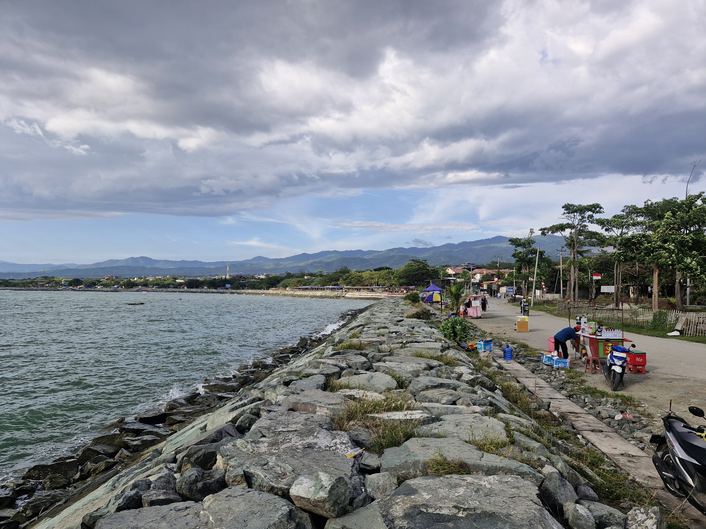
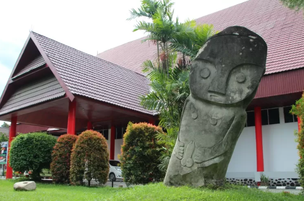
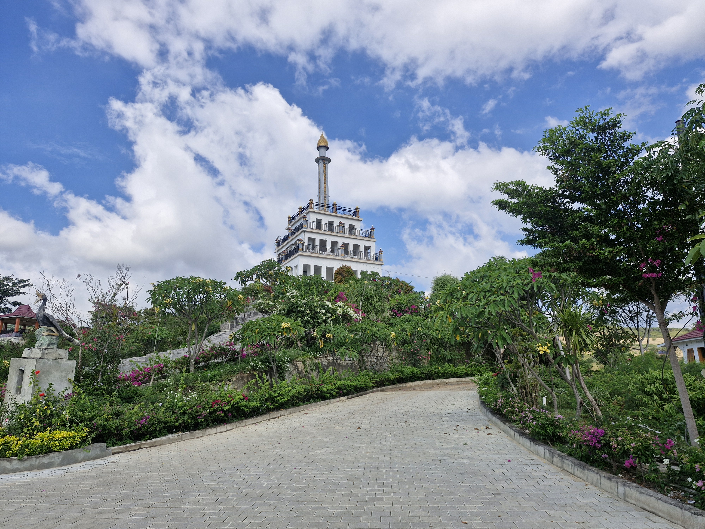
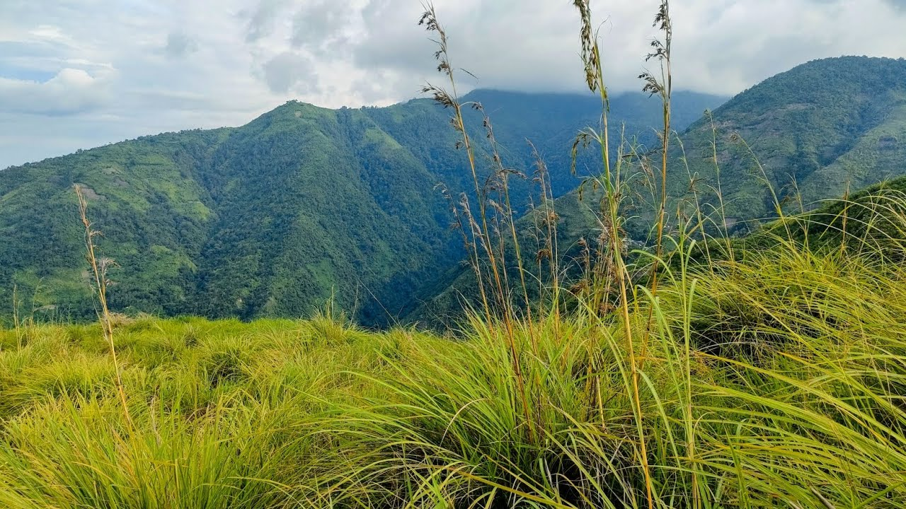

Temukan destinasi wisata terbaik di Kota Palu

Pantai dekat pusat Kota Palu dengan panorama Teluk Palu dan Pegunungan Gawalise. Cocok untuk bersantai, menikmati sunrise, serta kuliner tradisional.

Museum yang menyimpan koleksi sejarah, budaya, dan peninggalan khas Sulawesi Tengah. Wisata edukasi favorit di Kota Palu.

Monumen ikonik Kota Palu dengan simbol persatuan “Nosarara Nosabatutu”. Spot favorit untuk foto dan menikmati panorama kota.

Destinasi di ketinggian ±1.000 mdpl dengan panorama Teluk Palu. Populer untuk sunset, camping, dan menikmati alam dari atas kota.